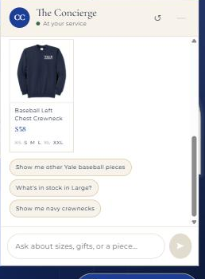
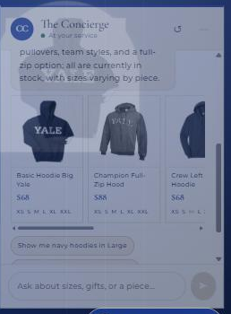
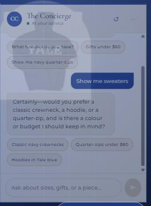

Check: the chat can look up an item's real price and stock from the database — not invented values.

Explanation: the Concierge was
asked about the Baseball Left Chest Crewneck and returned the real price ($58) and per-size stock from
campus_customs.db, with sold-out sizes (XS, XL) struck through on the card.]
2Dynamic search-result cards
Check: asking a category question ("show me blue hoodies") populates dynamic product cards from the database.

Explanation: the Concierge was
asked "show me blue hoodies" and returned matching navy-blue hoodie cards (with images, names, prices and
sizes) that are clickable through to each product page.]
3Chat Clarifying Questions
Check: for a vague prompt, the chat asks a clarifying question back before running a search.

Explanation: the Concierge was
asked the vague "show me sweaters" and, instead of dumping results, asked which style (crewneck, hoodie,
quarter-zip), colour, or budget to narrow by — with no product cards shown yet.]